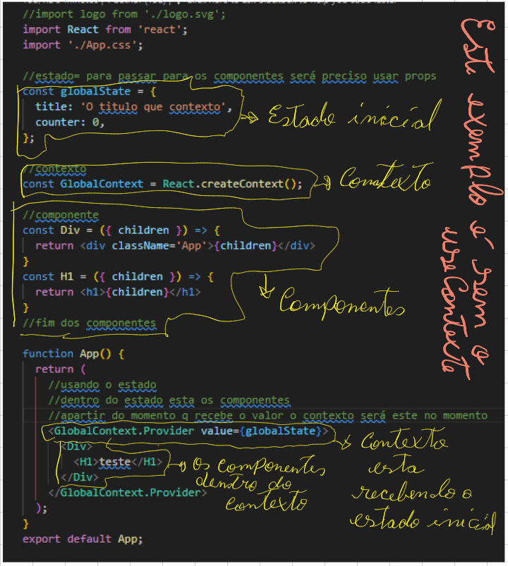
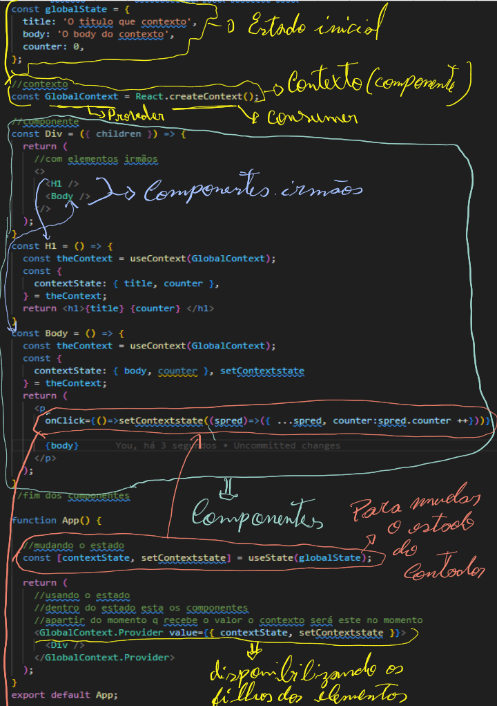
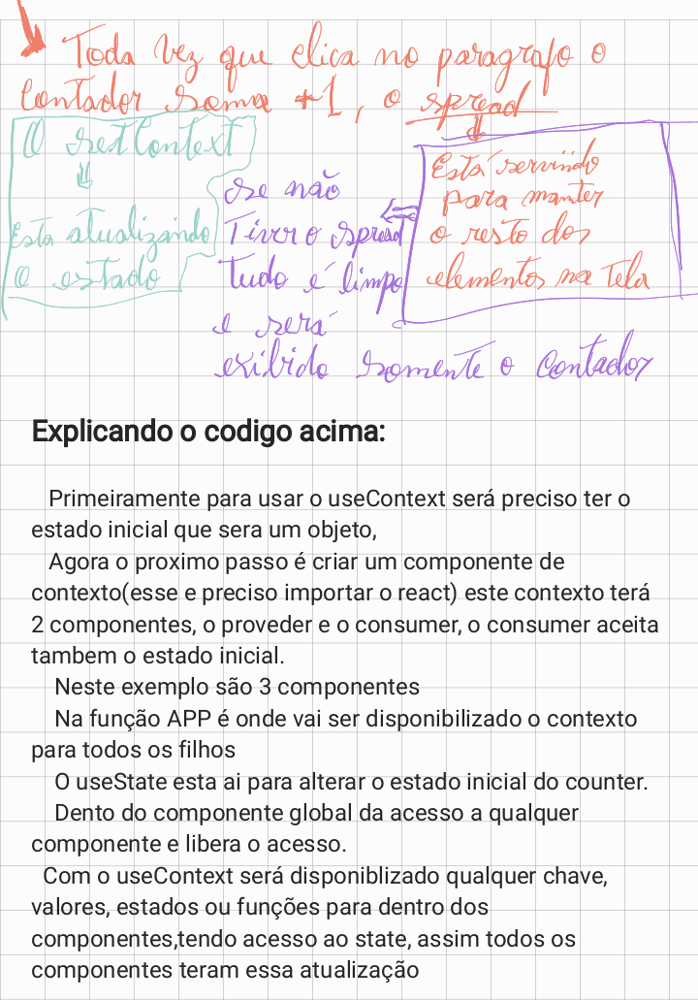

useReducer
Fonte: useReducer - React
useReducer é um React Hook que permite adicionar um redutor ao seu componente.
const [state, dispatch] = useReducer(reducer, initialArg, init?)
Referência
useReducer(reducer, initialArg, init?)
Chame useReducero nível superior do seu componente para gerenciar seu estado com um redutor.
import { useReducer } from 'react';
function reducer(state, action) {
// ...
}
function MyComponent() {
const [state, dispatch] = useReducer(reducer, { age: 42 });
// ...
Exemplo feito sem o useContext
Para entender primeiro sobre esse hook sera preciso entender o q é contexto; quando tem um componente com
varios outros dentro, para especificar filhos ou irmãos, entã e 8 o seria varias propriedades descendo de niveis e
por isso se torna inviavel usar dessa forma, pois todos seram instanciados como numa escada(cadeia, o pai
instancia no filho, o filho 1 instancia no 2 e assim por diante) passando varias props ate chegar no componente
que deseja exibir. Para evitar essa situação será criado o estado global,onde apartir dele possa se transitar em
qualquer lugar do codigo atravez do contexto sera passado o estado inicial, usando a propriedade Provider.
Com isso os componentes podem ver o contexto para controlar sera o value(valor), que será passado via contexto.
Entao em resulmo, o contexto recebe o estado inicial para q o componente possa o ver e com useContext esta sendo
pegado elementos do filho sem precisar de props de forma direta, sendo a vantagem do useContext.

esse exemplo esta sem o useContext
Exemplo feito com useContext


Parâmetros
-
reducer: a função redutora que especifica como o estado é atualizado. Deve ser puro, deve tomar
o estado e a ação como argumentos e deve retornar o próximo estado. Estado e ação podem ser de qualquer tipo.
-
initialArg: o contexto que você criou anteriormente com createContext. O
contexto em si não contém as informações, apenas representa o tipo de informação que você pode fornecer ou ler
dos componentes.
-
opcional init: o contexto que você criou anteriormente com createContext. O
contexto em si não contém as informações, apenas representa o tipo de informação que você pode fornecer ou ler
dos componentes.
Devoluções
- useContext: retorna o valor de contexto do componente de chamada. É determinado como o
valuepassado para o componente
mais próximo SomeContext.Provideracima do componente de chamada na árvore. Se não existir tal provedor, o
valor retornado será o que defaultValuevocê passou createContextpara esse contexto. O valor retornado está
sempre atualizado. O React renderiza novamente automaticamente os componentes que leem algum contexto se ele
mudar.
Ressalvas
-
useContext()a chamada em um componente não é afetada por provedores retornados do mesmo componente. O
correspondente
precisa estar acima do componente que está fazendo a useContext()chamada.
-
O React renderiza automaticamente todos os filhos que usam um contexto específico, começando pelo provedor que
recebe um arquivo value. Os valores anteriores e seguintes são comparados com a Object.iscomparação. Ignorar as
novas renderizações memonão impede que os filhos recebam novos valores de contexto.
-
Se o seu sistema de compilação produzir módulos duplicados na saída (o que pode acontecer com links simbólicos),
isso poderá quebrar o contexto. Passar algo via contexto só funciona se SomeContexto que você usa para fornecer
o contexto e SomeContexto que você usa para lê-lo são exatamente o mesmo object , conforme determinado por uma
===comparação.
Uso
Passando dados profundamente na árvore
Chame useContextno nível superior do seu componente para ler e assinar o contexto.
import { useContext } from 'react';
function Button() {
const theme = useContext(ThemeContext);
// ...
useContextretorna o valor do contexto para o contexto que você passou. Para determinar o valor do contexto, o
React pesquisa a árvore de componentes e encontra o provedor de contexto mais próximo acima para aquele contexto
específico.
Para passar o contexto para um Button, envolva-o ou um de seus componentes pai no provedor de contexto
correspondente:
function MyPage() {
return (
);
}
function Form() {
// ... renders buttons inside ...
}
Não importa quantas camadas de componentes existem entre o provedor e o Button. Quando um Button lugar dentro de
Formchama useContext(ThemeContext), ele receberá "dark"como valor.
useContext()sempre procura o provedor mais próximo acima do componente que o chama. Ele pesquisa para cima e não
considera provedores no componente do qual você está ligando useContext().